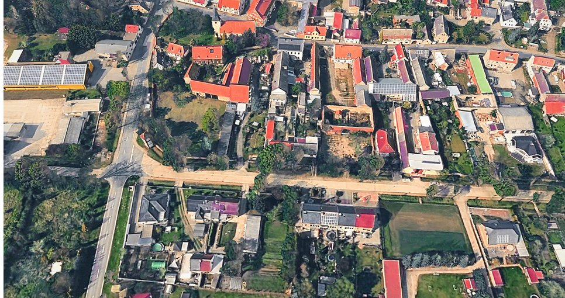
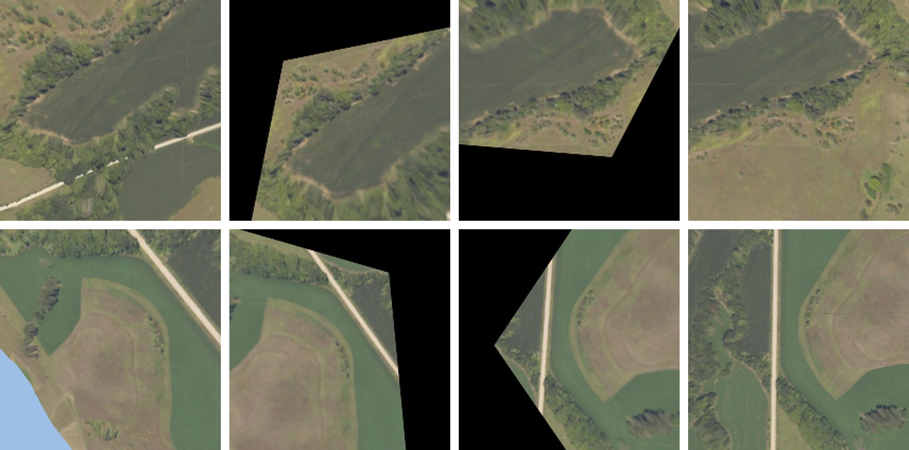

Hackathon 2026 · Track name
Homeward
Getting a drone home when GPS is jammed, using its downward camera and the way it flew out.
Team name · Name · Name · Name

~10 s. We built a way for a drone to fly home when GPS is jammed, using only the camera it already has and what it saw on the way out.
The problem
Jam the GPS and stock PX4 no longer knows where it is
until EKF2 flags the position invalid and the failsafe descends
inertial-only drift at +60 s and +3 min
median miss if it flew home anyway
32 missions · p90 4.2 kmdetects a slow GPS spoof (1 m/s drag)
Real PX4 EKF2 (replay harness) on simulated IMU, baro, compass and GPS logs. Drift numbers are medians across noise seeds.
~30 s · 3 clicks.
- Under jamming, PX4's estimator gives up after 5 seconds, declares position invalid, and the failsafe descends wherever it is.
- (click) If you ignore that and fly on the IMU alone, the error is ~60 m after a minute, ~500 m after three.
- (click) Over our 32 test missions it would have missed home by a median of 847 m, and by 4 km in the worst 10%.
- (click) Spoofing is worse: a slow 1 m/s drag is never detected. The drone follows the fake position.
Live replay
Loading the 3D replay…
If it doesn't load, open cesium/ directly.
~30 s. Keys: Space play/pause · T top-down · C chase/orbit · , . scrub · PageDown next slide.
- This is a real PX4 EKF2 replay over real 3D terrain. White is where the drone is; red is where it thinks it is.
- GPS is jammed 2.6 km out. It turns for home on IMU, baro and compass.
- Press T at the end: it "arrives" home, but it's ~540 m away. Across 10 noise seeds the median miss is 681 m.
- Honest caveat: stock PX4 would actually descend 5 s after the jam. We disabled that failsafe to show the drift.
Our idea
Vision breadcrumbs
Remember what the ground looked like on the way out. Recognise it on the way back.
Spoofing comes free: GPS is dropped when it disagrees with vision + IMU by more than 12 m.
~30 s · 1 click. Hansel and Gretel for drones. Outbound, while GPS still works, we save a tiny fingerprint of the ground every 20 metres, tagged with where we were. On the way back we look down, straighten the image using the flight controller's attitude and the barometer, and ask the model: how far am I from the breadcrumb I expect next? That offset goes into PX4 as if it came from a visual odometry camera. (click) And because vision gives an independent position, a spoofed GPS that drifts away from it gets dropped.
System
It plugs into PX4 like a VIO camera
~20 s. Top row: outbound, camera to breadcrumb store. Bottom row: the return loop. The EKF feeds attitude and altitude back to rectify, and its position picks which breadcrumb to match. The fix goes in as standard external vision, so nothing inside PX4 changes.
Model
A 1 MB matcher that knows when it is unsure
int8 student
per breadcrumb
≈ 21 MB for a 3 h flightmultiply-adds per frame
on a Pi-class CPU
~1 Hz on a flight-controller MCU (estimate)~25 s. A frozen ImageNet backbone turns the rectified frame into a 14 by 14 grid of 16-number descriptors: that grid is the breadcrumb, 2 KB. We correlate the live grid against the stored one over 225 shifts and read out a sub-cell offset in metres, plus a covariance the EKF uses to weight it, plus "have I arrived" and "this doesn't match". About 35 million multiply-adds: ~10 ms on a Raspberry Pi-class CPU, roughly 1 Hz on a flight-controller MCU (that one is an estimate, not measured), or on a smart-camera module.
Simulator and data
Real terrain, simulated flights


Left: Magdeburg, Google Photorealistic 3D Tiles. Right: rectification on a US area (lidar + NAIP aerial), raw frame → levelled → north-up and scaled → reference.
areas: Magdeburg 10 × 10 km + 12 US
AGL, physically flown quad trajectories
training frames
frames rendered on 4 GPUs
~20 s. We built the simulator ourselves on real-world 3D: Google's photorealistic tiles for a 10 by 10 km area near Magdeburg, and US lidar plus NAIP aerial imagery for 12 more areas. Quadcopter trajectories are physically flown at 80 to 250 m. We rendered 1.82 million training frames at up to 6,000 frames a second on four GPUs.
Live replay
Loading the 3D replay…
~40 s. Same terrain, our system, closed loop: the drone actually flies on our estimate. This is the v3 model, which never saw this country in training (mission 12 of 32). Green is our estimate, white the truth: they stay together. Dots on the ground are the breadcrumbs. Press T at the end: home within ~2 m. Press 1 to flip back to stock PX4 for contrast.
What the drone sees on the way back
~20 s. Top middle is what the camera sees after rectification; top right is the breadcrumb it's looking for. The model says "you are 4 m south-east of it, ± 4 m", and the EKF moves on to the next breadcrumb. Fix yield is 99.7%.
Results · closed-loop return to home
32 of 32 missions home within 10 m
missions home within 10 m
ours vs stock PX4
median distance from home
p90 7.5 m vs 4.2 kmmedian position error during the return
real PX4 EKF2, same fixes: 3.8 m32 missions over Magdeburg: 1–4 km out, 100–200 m AGL, wind up to 6 m/s with gusts. GPS jammed at the turnaround. Model v2. Stock = PX4 EKF2 replay of the same flights. Magdeburg terrain was in training (different flights); see held-out test.
~25 s · 1 click. Every one of 32 missions gets home within 10 m; median 3.3 m. Stock PX4 gets none of them home. During the return our position error is about 3 m. (click) Each dot is one mission: ours all sit left of the 10 m line, stock spreads from 100 m to 8 km. And it isn't an artifact of our own EKF: feeding the same fixes through real PX4 EKF2 gives 3.8 m vs 3.5 m in our twin.
Results · offline
Its uncertainty is honest
| Ours | Ideal | |
|---|---|---|
| Offset error, median | 4.9 m | 0 |
| Errors inside 1σ | 37% | 39% |
| Errors inside 2σ | 85% | 86% |
| Confident but wrong fixes closed loop | 0.02% | 0 |
σ is the model's own 2D covariance (1σ and 2σ ellipses: 39% and 86% for a Gaussian). Confident-wrong = a fix more than 3σ (Mahalanobis) from the truth.
~15 s. The EKF trusts the model only as much as the model's own uncertainty says. That uncertainty is calibrated: 37% of errors fall inside 1 sigma where 39% should, 85% inside 2 sigma vs 86%. In closed loop only 0.02% of fixes were confidently wrong.
Generalisation · Magdeburg held out of training
It works in a country it never saw
Trained on US terrain only. One threshold is retuned on ~50 local flights.
| v3 · never saw it | v2 · trained on it | |
|---|---|---|
| Home within 10 m closed loop | 32 / 32 | 32 / 32 |
| Distance from home, median / p90 | 3.4 / 7.2 m | 3.3 / 7.5 m |
| Offset error, median offline | 5.3 m | 5.0 m |
| Errors inside 1σ ideal 39% | 38% | 37% |
| False fixes 5.3% with the US threshold | 1.0% | – |
| Complex routes, home within 10 m | running | – |
~20 s. The obvious question: does it only work because it trained on this terrain? v3 never saw Magdeburg, or Germany at all: it trained on US terrain only. Closed loop it still gets 32 of 32 home, median 3.4 m, p90 7.2 m, essentially the same as the model that trained here. The one thing we retune is the no-match threshold, on about 50 local flights: with the US threshold, 5.3% of fixes are false; retuned, 1.0%. Complex routes, zig-zags, surveys, orbits, are running now. Same 32 missions as the results slide; stock PX4 got 0 of 32 home. A false fix is a wrong fix that gets past the no-match gate. [Update the complex-routes row with final numbers.]
Limitations
What we haven't solved
- Hilly terrainRectification assumes flat ground, so accuracy drops on slopes.
- Sim-to-real appearanceUntested. Real cameras, seasons and light differ from rendered tiles.
- No-match thresholdNeeds calibrating per region.
~15 s. Three honest caveats. Hills break our flat-ground rectification. Everything is simulated, so real-camera appearance change is untested. And the no-match threshold has to be calibrated per region.
Homeward
GPS jammed. Home within 10 m.
32 of 32 missions, on a 1 MB model, through stock PX4.
Live replay: 7peng.github.io/drone-presentation
~5 s. Thanks. The live replay is at the URL.